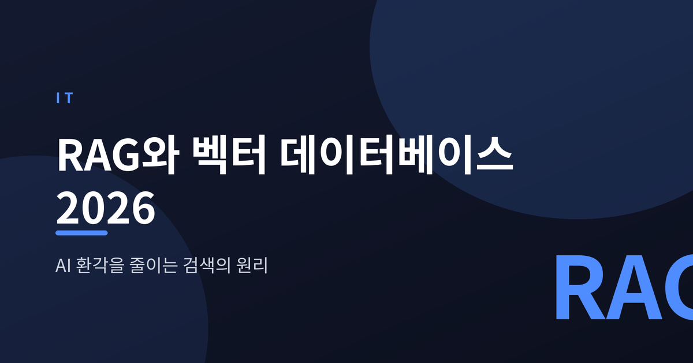
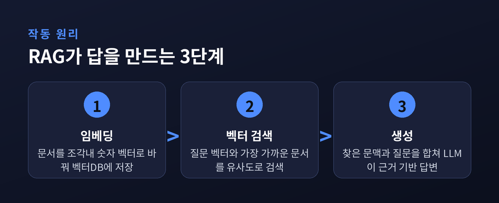
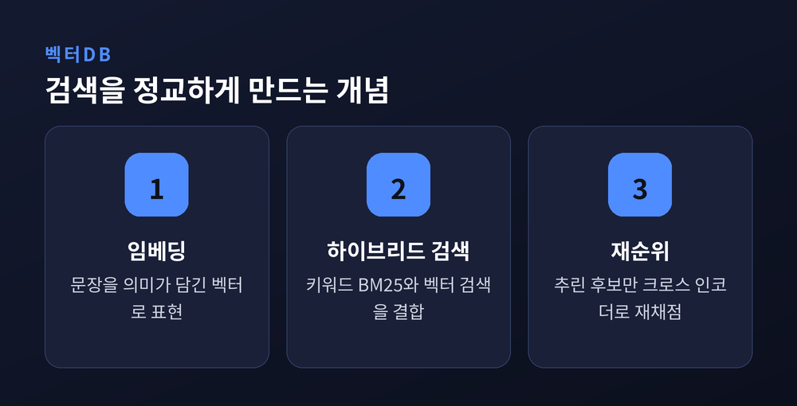
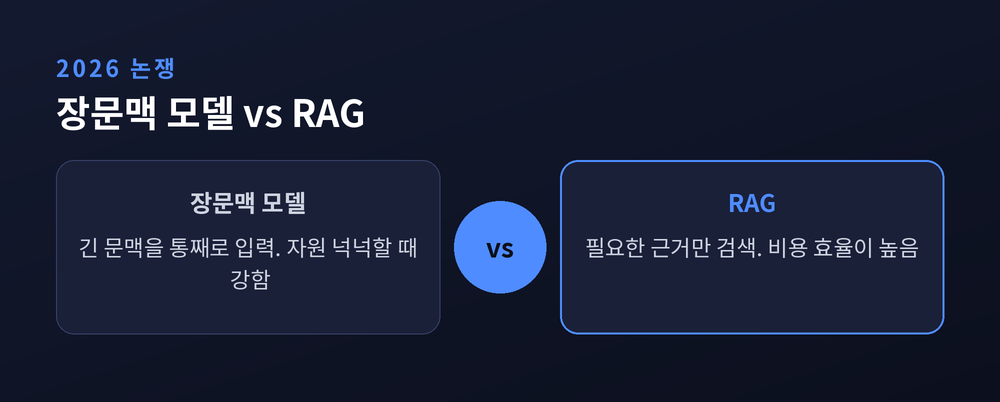

AI 환각을 줄이는 검색의 원리

생성형 AI가 그럴듯한 거짓을 답하는 현상을 환각이라 부릅니다. RAG(검색증강생성)는 이 문제를 검색으로 다루는 방법입니다. 답을 만들기 전에 근거 문서를 먼저 찾아오는 구조를 살펴보겠습니다.
RAG는 인덱싱, 검색, 생성의 세 단계로 움직입니다. 먼저 원본 문서를 작은 조각으로 나눕니다. 각 조각을 임베딩 모델이 숫자 벡터로 바꿔 벡터 데이터베이스에 저장합니다. 이 과정이 인덱싱입니다.
사용자가 질문하면 그 질문도 같은 방식으로 벡터가 됩니다. 시스템은 벡터 사이의 거리를 재어 가장 가까운 문서를 찾습니다. 코사인 유사도가 흔히 쓰입니다. 마지막으로 찾아온 문맥과 질문을 하나의 프롬프트로 합쳐 LLM에 넘깁니다. 모델은 자신의 기억이 아니라 눈앞의 근거를 바탕으로 답합니다.

벡터 검색은 의미가 비슷한 문장을 잘 찾습니다. 다만 약점이 있습니다. 제품 코드나 일련번호처럼 정확히 일치해야 하는 질의에는 취약합니다.
그래서 하이브리드 검색이 등장했습니다. 키워드 방식인 BM25와 벡터 검색을 함께 돌려 서로의 빈틈을 메웁니다. 두 검색 결과는 점수 대신 순위를 기준으로 합치는 RRF 같은 방법으로 통합됩니다. 여기에 재순위를 더하면 정밀도가 올라갑니다. 1차로 추린 소수 후보만 크로스 인코더가 다시 채점하는 방식입니다. Qdrant, Weaviate, Pinecone 같은 도구가 이 3단계 구조로 수렴하고 있습니다.

최근 RAG는 고정된 파이프라인을 넘어섭니다. 에이전트형 RAG는 계획하고 검색하고 답을 스스로 비평한 뒤 다시 찾는 과정을 반복합니다. GraphRAG는 지식 그래프를 결합해 문서 사이의 관계를 추적합니다. 금융과 헬스케어처럼 규제가 엄격한 분야에서 도입이 늘고 있습니다.
한편 긴 문맥을 통째로 넣는 장문맥 모델과 RAG 중 무엇이 나은지 논쟁도 이어집니다. 정답은 하나가 아닙니다. 장문맥은 자원이 넉넉할 때 강하고, RAG는 비용 면에서 유리합니다. 그래서 질문의 성격에 따라 둘을 오가는 하이브리드가 실무의 답으로 떠오릅니다.

RAG의 장점은 분명합니다. 답을 실제 문서에 묶어 두어 근거 없는 추측을 줄입니다. 출처를 함께 제시할 수 있어 검증도 쉬워집니다.
다만 환각을 완전히 없애지는 못합니다. 검색이 엉뚱한 문서를 가져오거나 핵심 문서를 놓치면 모델은 여전히 사실을 지어낼 수 있습니다. 전문 도메인에서는 이런 실패가 더 자주 드러납니다. 검색의 품질이 곧 답의 품질이 되는 구조이기 때문입니다.
RAG는 AI에게 기억 대신 참고 자료를 쥐여 주는 방식입니다. 검색이 정확할수록 답도 정직해집니다.
— 결국 좋은 답은 좋은 검색에서 나옵니다.
무엇을 찾아오느냐가, 무엇을 말하느냐를 결정합니다.